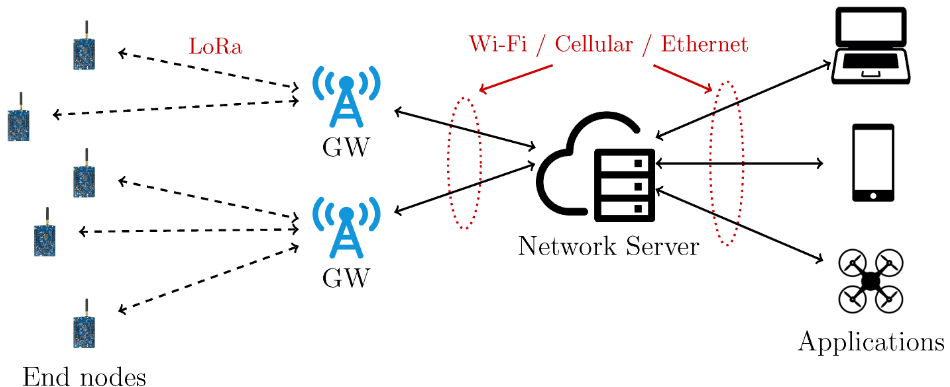
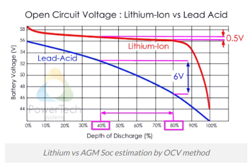
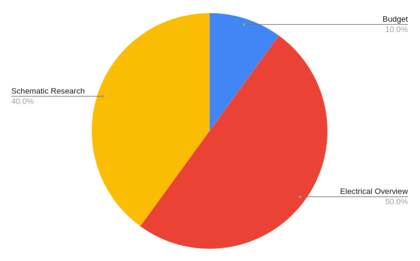
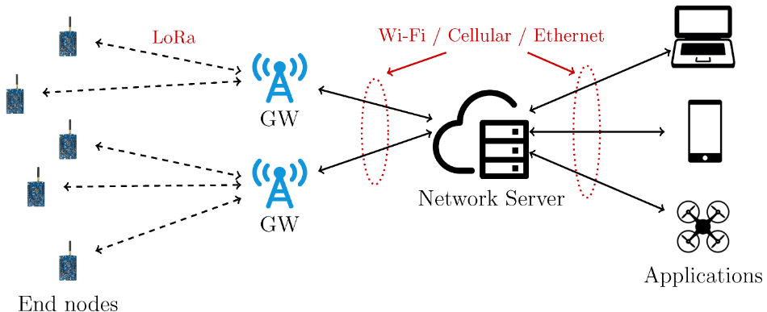
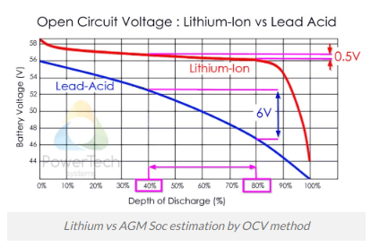

Progress Report for Carrie Kemmet
Week 1:
Date: September 11, 2020Total hours: 8:30
Description of design efforts:
This week, I reviewed the theory behind the components that I am primarily responsible for and developed practical ways to prototype the hardware. In addition to selecting the devices, I researched their applications, limits, programming, and theory. I also ordered development kits so that I could start experimenting with them next week.
The two components that I focused on were the radio transceiver and the coulomb counter. The research was mostly conducted via the Google search engine. Detailed below are the main findings and how they impact the project.
Each Snow-weAR system requires a radio transceiver chip. After investigating various physical layer protocols, LoRa (Long Range) protocol was selected. The advantages of LoRa are that it’s license free, low power, and high range, which is a trade-off for the low data rate [1]. I found several development kits and a wide variety of source code[2] for the selected chip that demonstrates ease of use and a wide range of capabilities.
|
 Figure 1: Example of a LoRa Network[7] |
Although this application of LoRa only requires point to point communication, the LoRaWAN communication protocol allows expansion to mesh networking. This LPWAN (low power wide area network) network stack allows bidirectional communication between a gateway and several nodes spread across kilometers and has important applications across industry, from agriculture to smart cities [3]. Future projects could expand on Snow-weAR to increase range, data availability, and processing. |
| In addition to researching LoRa, I also checked out various power monitoring methods, primarily ADC’s and coulomb counters. Because we are using a Lithium Ion battery, a coulomb counter is more appropriate for the application. This is because battery consumption is less strongly correlated with voltage variance and ADC’s therefore provide little accuracy. [4] Coulomb counters function by integrating current flowing through the circuit over time and relaying the SOC (State of Charge), or the ratio between the amount of energy currently stored and the capacity. [5] This coulomb counter will allow the system to accurately report charge and discharge, within 10% as stated within the PSSC, and potentially down to 1% error. |
 Figure 2: Battery Voltage vs Discharge [8] |
I also bought an Arduino Uno and a set of modules to start experimenting with LoRa. I plan on using the Arduino to conduct experiments due to ease of use and the presence of existing libraries, and on the other end of the transceiver I will use the project microcontroller to ensure successful implementation. A coulomb counter module by SparkFun was also identified and will be ordered for prototyping purposes. [6]
Week 2:
Date: September 18, 2020Total hours: 10:00
Description of design efforts:
| This week, I spent a lot of time on the homework, because it was my turn to do the assignment. Aside from that, I spent a lot of time organizing our schematic now that we have our components selected. I did some research on voltage regulators and discovered that our system needed an LDO regulator due to the small difference between the supply voltage and the highest voltage required by any component. I also researched various batteries and determined the minimum power requirements for a battery to last the amount of time needed for the functional specifications. |
 Figure 1: Time allocation for the week |
Pictured is part of the work I did on the schematic. In a file, I saved images of sample schematics for every component. I divided the components into three systems: sensing, power, and radio. I then generalized the diagrams by including output pins from the schematics and their connections. The purpose of this is to see how all of the chips interact with each other, the main processor, and the voltage source. Any wires or small components that are part of detailed circuitry are not included. These diagrams will inform the final design of the schematic and also help confirm that all currents and voltages meet system requirements.

![Figure 1: Example of a LoRa Network[7]](https://www.mdpi.com/sensors/sensors-20-02028/article_deploy/html/images/sensors-20-02028-g001.png){kind=link}
![Figure 2: Battery Voltage vs Discharge [8]](https://www.powertechsystems.eu/wp-content/uploads/sites/6/2018/11/OCV-vs-SOC-EN.png.webp){kind=link}
{kind=link}
{kind=link}
{kind=link}
Figure 2: My simplified schematic (left), the coulomb counter complete schematic [9] (center), and the regulator schematic [10] (right)
Week 3:
Date: September 25, 2020Total hours: 6:00
Description of design efforts:
| Most of this week was spent interfacing with development kits for the components that we will use for our final implementation. Pictured below is my setup. I also spent time configuring an Arduino Uno and LCD, however, I later realized that this is currently unnecessary, although it may come in handy later. I spent considerable time trying to interface with the transceiver chip, and was unable to establish a serial connection. The CP210x driver on my computer isn't recognizing the chip so I need to reconfigure that. Although I didn't get much working on the hardware side, I learned a lot about the procedure of programming the transciever chip. This includes the steps needed during the setup period, as well as the various modes that it can enter, such as a receeving state. Additionally, familiarized myself with the transmission protocol and with unpacking incoming data. The Github repository that I am using to supplement the datasheet information can be found here. |
{kind=link}
{kind=link}
Figure 1: Radio transciever module (left), and Arduino Uno (right) setups
Sources Cited:
[1] LoRa-alliance.org. 2020. LoRa Alliance. [online] Available at: <https://lora-alliance.org/sites/default/files/2018-04/what-is-lorawan.pdf> [Accessed 9 September 2020].
[2] mbed.com. 2018. ARM Mbed. [online] Available at: <hhttps://lora-alliance.org/sites/default/files/2018-04/what-is-lorawan.pdf> [Accessed 9 September 2020].
[3] F. Adelantado, X. Vilajosana, P. Tuset-Peiro, B. Martinez, J. Melia-Segui, and T. Watteyne, “Understanding the Limits of LoRaWAN,” IEEE Communications Magazine, vol. 55, no. 9, pp. 34–40, 2017, [Accessed 9 September 2020].
[4] PowerTechSystems.com. 2020. PowerTech. [online] Available at: <https://www.powertechsystems.eu/home/tech-corner/lithium-ion-state-of-charge-soc-measurement/> [Accessed 9 September 2020].
[5] ScienceDirect.com. 2020. ScienceDirect. [online] Available at: <https://www.sciencedirect.com/topics/engineering/coulomb-counting/> [Accessed 9 September 2020].
[6] Learn.SparkFun.com. 2020. sparkfun. [online] Available at: <https://learn.sparkfun.com/tutorials/ltc4150-coulomb-counter-hookup-guide/all> [Accessed 9 September 2020].
[7] Learn.SparkFun.com. 2020. sparkfun. [online] Available at: <https://learn.sparkfun.com/tutorials/ltc4150-coulomb-counter-hookup-guide/all> [Accessed 9 September 2020].
[8] G. Codeluppi, A. Cilfone, L. Davoli, and G. Ferrari, “LoRaFarM: A LoRaWAN-Based Smart Farming Modular IoT Architecture,” Sensors, vol. 20, no. 7, p. 2028, 2020. [Accessed 9 September 2020].
[9] “BQ34110PW ACTIVE,” Texas Instruments. [Online]. Available: https://www.ti.com/store/ti/en/p/product/?p=BQ34110PW. [Accessed: 16-Sep-2020].
[10] Mousern.com. 2020. mouser. [online] Available at:<https://www.mouser.com/datasheet/2/760/XC6220-837466.pdf> [Accessed 15 September 2020].